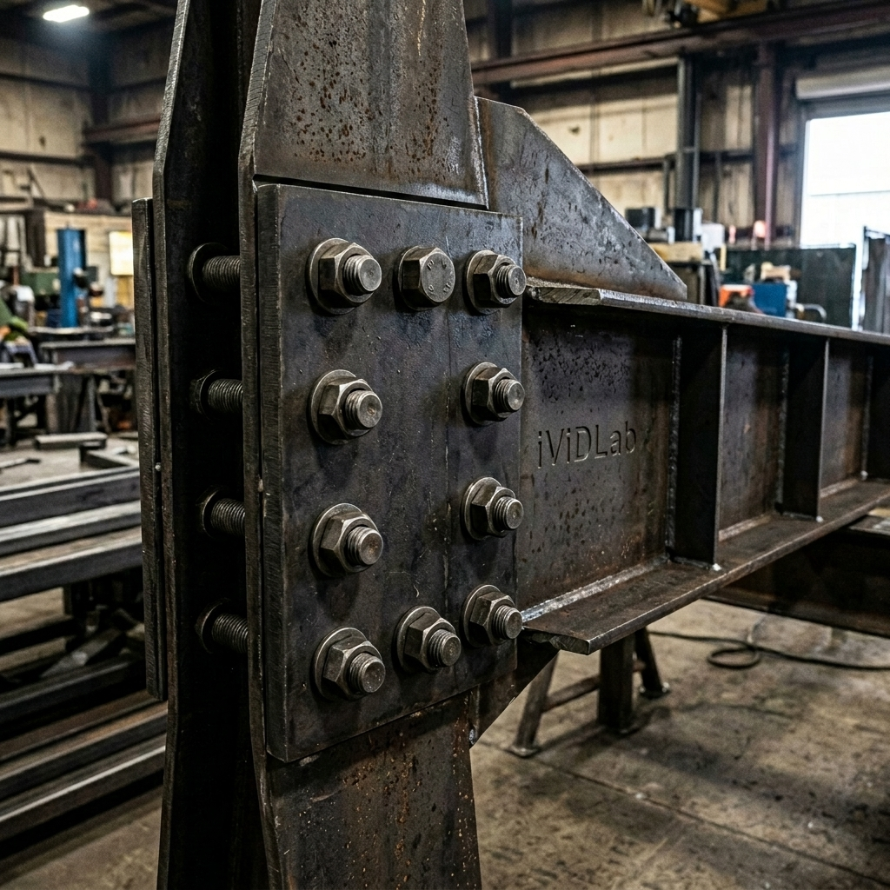
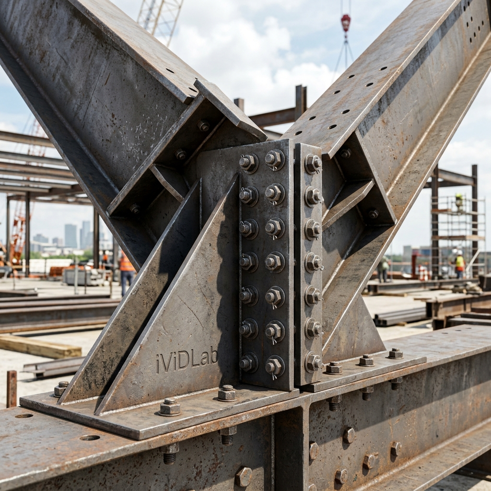

Các liên kết tổ hợp nâng cao: Tapered beam to beam (200) và Tapered column to tapered beam (199)
Advanced Built-up Connections: Tapered beam to beam (200) and Tapered column to tapered beam (199)
24 Tháng 05, 2026May 24, 2026
20 min read
Series 3 — PEB Components

Macro 199: Tapered column to tapered beam

Macro 200: Tapered beam to beam
1. TỔNG QUAN NHIỆM VỤ & COMPONENT ID
Để khép lại Series 3 về cấu kiện nhà thép tiền chế (PEB), chúng ta sẽ tìm hiểu bộ đôi liên kết tổ hợp cực kỳ quyền lực: Tapered column to tapered beam (199) và Tapered beam to beam (200). Đây là hai công cụ chuyên trị các nút giao góc nách khung lệch (skewed knee joints) và đỉnh chóp (apex/ridge joints) của dầm thép vát tiết diện.
Macro 199: Nối dầm vát vào cột vát. Tự động sinh bản bích (end plates), sườn gia cường bản bụng (web stiffeners) và sườn gia cường bản cánh tam giác (triangular flange stiffeners).
Macro 200: Nối hai dầm vát tại đỉnh nóc nhà. Sinh hai bản bích ghép lại, dàn bu lông và hệ thống sườn gia cường.
2. BẢNG SO SÁNH TRƯỜNG HỢP SỬ DỤNG (USE CASES)
Component ID
Ứng dụng chính (Application)
Cấu kiện yêu cầu (Required parts)
199
Knee Joint (Góc nách khung) kết nối cột và dầm vát. Hỗ trợ tốt các nách khung có góc lệch.
1 Dầm tổ hợp (Beam), 1 Cột tổ hợp (Column)
200
Apex/Ridge Joint (Đỉnh nóc khung) kết nối hai nửa dầm vát tại chính giữa nhịp nhà xưởng.
2 Dầm tổ hợp (Beams)
3. THỨ TỰ LỰA CHỌN (SELECTION ORDER)
Khác với các liên kết I-beam thông thường, do các cấu kiện tổ hợp (Built-up) được tạo thành từ nhiều bản mã rời rạc (web, top flange, bottom flange), bạn BẮT BUỘC phải click chọn vào bản bụng (web) của cấu kiện khi thao tác.
Trình tự click chuột:
Macro 199: Chọn bản bụng của dầm (Main part) -> Chọn bản bụng của cột (Secondary part).
Macro 200: Chọn bản bụng của dầm thứ nhất (Main part) -> Chọn bản bụng của dầm thứ hai (Secondary part).
Liên kết sẽ tự động sinh ngay sau khi cấu kiện thứ 2 được chọn mà không cần nhấn chuột giữa.
4. CHI TIẾT THIẾT LẬP (DEEP DIVE SETTINGS)
Tab Picture (Kích thước sườn & Bản bích)
Tại tab này, bạn có thể thiết lập cự ly của sườn gia cường (stiffener dimensions) và phần nhô ra của bản bích (end plate edge dimension).
Tab Parts & Parameters
Định nghĩa chiều dày, mác thép (Material) và tiền tố đánh số (Prefix/Start No) cho tất cả các bản thép cấu thành liên kết (End plate, Web stiffener, Flange stiffener). Tại tab Parameters, bạn có thể thiết lập vát góc sườn (Stiffener chamfer dimensions).
Tab Bolts
Kiểm soát cấu hình mạng lưới bu lông: kích thước (Bolt size), dung sai (Tolerance) và khoảng cách các hàng/cột (Bolt spacing). Chú ý sử dụng dấu cách (space) để nhập danh sách bước bu lông.
5. MẸO LẮP DỰNG & QUẢN LÝ SAI SỐ (ERRECTION TIPS)
CẢNH BÁO QUAN TRỌNG KHI RENDER & DETAILING:
Tuyệt đối không được hàn (weld) bản bích (End plates) vào cấu kiện chính tại vị trí đã có bu lông. Liên kết bu lông tại công trường (Site bolts) yêu cầu hai mặt bản bích tách rời nhau hoàn toàn và được siết chặt bằng bu lông. Nếu có bất kỳ đường hàn nào nối chết 2 bản bích hoặc nối bản bích vào cấu kiện đối diện, quá trình lắp ráp công trường sẽ hoàn toàn thất bại.
Slotted Holes cho Macro 200 (Đỉnh chóp):
Khi cẩu lắp hai nửa mái dầm dài vài chục mét và ghép lại tại đỉnh chóp, sai số chế tạo và võng tự trọng là rất lớn. Hãy luôn sử dụng tùy chọn Slotted holes ở các hàng bu lông tại đỉnh (Tab Bolts) để tạo lỗ hình oval dài, giúp công nhân dễ dàng xỏ bu lông qua hai bản bích đang rung lắc trên cao.
1. INTRODUCTION & COMPONENT ID
To conclude Series 3 on Pre-Engineered Building (PEB) components, we explore two highly powerful built-up connections: Tapered column to tapered beam (199) and Tapered beam to beam (200). These are specialized tools for handling skewed knee joints and apex/ridge joints of tapered steel profiles.
Macro 199: Connects a tapered beam to a tapered column. Automatically generates end plates, web stiffeners, and triangular flange stiffeners.
Macro 200: Connects two tapered beams at the building's apex. Generates flush end plates, bolt groups, and stiffening systems.
2. USE CASES TABLE
Component ID
Primary Application
Required Parts
199
Knee Joint connecting tapered columns and beams. Ideal for skewed joints.
1 Built-up Beam, 1 Built-up Column
200
Apex/Ridge Joint connecting two beam halves at the center of the roof span.
2 Built-up Beams
3. SELECTION ORDER
Unlike standard I-beam connections, because built-up parts consist of multiple individual plates, you MUST select the web plate of the component when applying the macro.
Clicking Sequence:
Macro 199: Select the beam's web (Main part) -> Select the column's web (Secondary part).
Macro 200: Select the first beam's web (Main part) -> Select the second beam's web (Secondary part).
The connection is created automatically upon selecting the second part.
4. DEEP DIVE SETTINGS
Picture Tab (Stiffener & Plate Dimensions)
Here you can set stiffener placement dimensions and the end plate's edge distance projection.
Parts & Parameters Tab
Define the thickness, material grade, and numbering prefix for all constituent plates (End plate, Web stiffener, Flange stiffener). The Parameters tab allows you to configure stiffener chamfer dimensions.
Bolts Tab
Controls the bolt array: Bolt size, hole tolerance, and spacing. Remember to use spaces to separate multiple spacing values.
5. ERRECTION TIPS & TOLERANCE MANAGEMENT
CRITICAL DETAILING WARNING:
Absolutely NO WELDS are permitted on the bolted interfaces. Site-bolted connections require the mating faces of the end plates (or the end plate and column flange) to be completely un-welded. Generating weld seams that lock these interfaces together will make site erection impossible.
Slotted Holes for Macro 200 (Apex Joint):
When lifting two massive roof rafters and joining them at the apex, fabrication tolerances and self-weight deflection can cause misalignment. Always utilize the Slotted holes option on the Bolts tab to create elongated holes, making it easier for site crews to insert bolts through the swaying end plates high in the air.